Chapter 4
Formants
Current science describes voice production through the source/filter theory. In this theory, the word source refers to the periodic (having frequency) sound generated by the oscillating vocal folds. The word filter refers to the resonators and articulators of the vocal tract.
Source/filter theory can be easily understood through the analogy of a stereo system. Stereos require a sound source, such as a CD player, and an amplifier. Almost all stereo amplifiers also have some sort of tone control. In this analogy, the amplifier and tone controls combine to form the filter. For basic car radios, this might only involve a pair of buttons labeled treble and bass. Adjustment to these controls results in the amplification or attenuation of high or low frequency sounds. More sophisticated stereo systems often include a component called a graphic equalizer. Equalizers divide the sound spectrum into small segments, called bands. High-quality equalizers might feature bands as small as a third-octave wide. By allowing the listener to selectively amplify and attenuate specific frequency ranges (bandwidths), equalizers can reshape a sound’s spectral envelope to adjust for the acoustics of the listening space.
The vocal tract is the amplifier and graphic equalizer of the human voice. It is highly adjustable and has remarkable ability to modify sound selectively. Like the stereo component, it can amplify sounds in one small frequency band while virtually canceling adjacent frequencies. By shifting the frequencies that are amplified and attenuated—like moving the sliders up and down on an equalizer—vocal tone is transformed into the vowel sounds required for speech. To better understand exactly how this can occur, we will revisit some properties of sound and resonance.
Chapter 2 demonstrated that vocal sound is complex, consisting of a fundamental frequency and a large number of harmonic overtones. As produced by the glottis before being filtered by the vocal tract, these harmonics diminish in amplitude as they increase in frequency. This phenomenon was called spectral slope, as seen again in Figure 4-1.
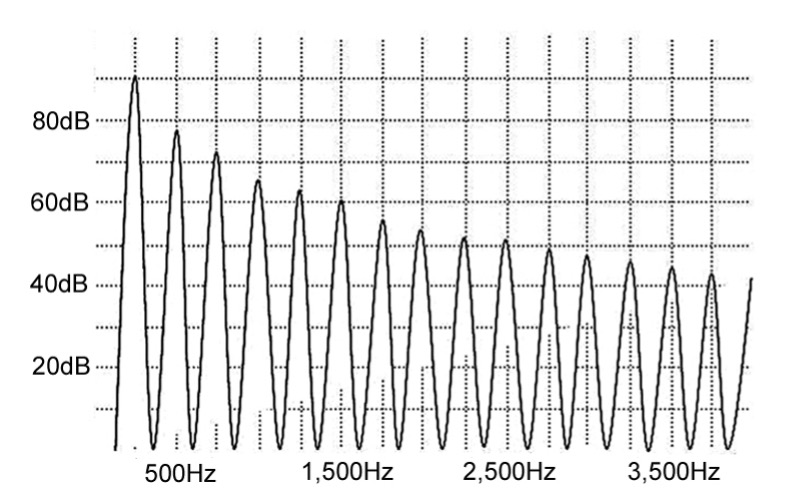
Figure 4-1: Spectrum of glottal sound
Chapter 3 demonstrated that resonators have affinities for specific frequencies. In quarter-wave resonators, such as the vocal tract, these frequencies correspond to the odd numbered multiples of the first resonant frequency. Resonant frequencies can be graphically represented, as seen in Figure 4-2, which depicts the resonances of a 17.5cm tube of uniform diameter. Frequency and amplitude remain on the X and Y axes, respectively.
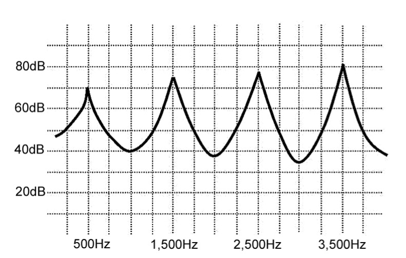
Figure 4-2: Resonances of a 17.5cm tube
The image on the graph in Figure 4-2 resembles waves on the ocean with peaks and troughs. Peaks represent areas of resonance; troughs are places where sound is attenuated. Note that the resonance peaks become stronger at higher frequencies. This is because quarter-wave resonators do not treat all frequencies equally; resonance potential (amplification) increases as frequency rises at the rate of about 6dB per octave. This helps explain why it can be so difficult for sopranos to sing high notes quietly—their resonators are extremely efficient at high frequencies (this also is one of the reasons why the voices of young children often seem piercingly loud). More importantly, the increased efficiency of resonance at higher frequencies shows why harmonics several octaves above the fundamental still contribute to vocal timbre.
The following sequence demonstrates what happens to the glottal sound as it passes through the vocal tract. First, we see the sound that is produced by the vocal folds with its uniform spectral slope (Figure 4-1). Next, we see the resonance contribution of the vocal tract; there is no sound yet—this image only shows potential amplification (Figure 4-2). The third image in the series represents the sound that exits the mouth, which is the glottal source after it has been filtered by the resonance of the vocal tract (Figure 4-3).
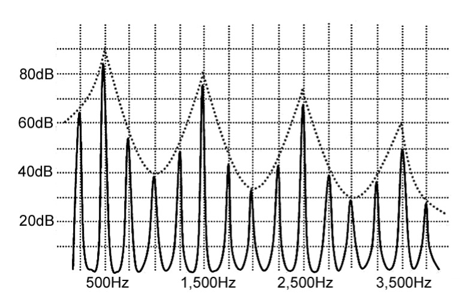
Figure 4-3: Sound that exits the vocal tract
Dramatic changes occur when the glottal sound is resonated by the vocal tract. Harmonics that coincide with resonance peaks are amplified while those found at resonance troughs are attenuated, creating a new spectral envelope (Figure 4-3). Overtones are no longer diminishing at a constant rate as they increase in frequency. Some of them are strongly amplified; others are all but eliminated. The glottal sound source has been modified by the filtering action of vocal tract resonance.
It is important to remember that even though the source and filter have a degree of interactivity, their basic functions are independent (possible interactions between the glottis and vocal tract will be discussed later in this chapter when nonlinear source filter theory is explored). Figure 4-4 demonstrates different pitches that are filtered by the same resonator. In these images, vocal tract resonance is shown by the upper line; individual harmonics lie below. Because the resonance structure is constant, the overall spectral envelope changes very little (as shown by the relative strength of each harmonic). Significant changes, however, are seen in the amplitude of individual harmonics. The fourth harmonic that is visible in Figure 4-4A coincides with a resonance peak and is therefore amplified, but the fourth harmonic shown in 4-4B coincides with a resonance trough and therefore is attenuated.
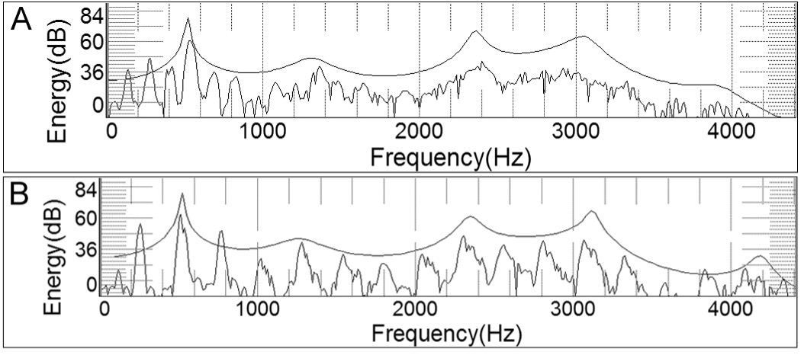
Figure 4-4: Same resonator, different pitch
Figure 4-5 shows the result of changing the resonator while maintaining constant pitch. Once again, a different pattern of amplification is seen within the harmonic series. This type of change—the change that results from modifying the resonator—is responsible for creating the unique vocal timbres that are identified as vowel sounds. Figure 4-5A depicts resonance peaks at about 500 and 1,500Hz (approximately B4 and G6); any vocal sound with peaks in these regions of the frequency spectrum will be heard as the vowel /ǝ/ (schwa). In Figure 4-5B the resonance peaks are shifted to 350 and 2,100Hz (approximately F4 and C7); any vocal sound with peaks in these regions will be heard as the vowel /i/ regardless of fundamental frequency or the specific harmonics that are amplified.
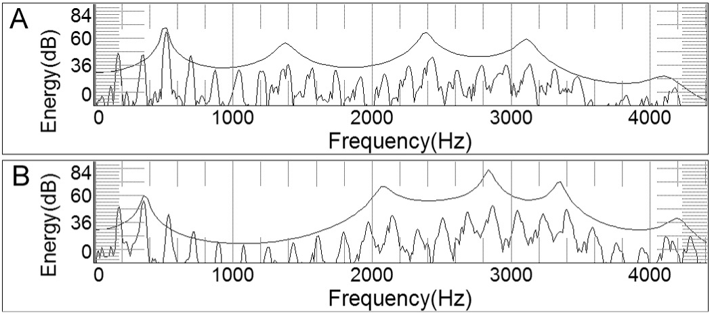
Figure 4-5: Same pitch, different resonator shapes
The resonance peaks of the vocal tract that result in vowels and other changes in timbre are called formants. The definition of the term formant is therefore simply and succinctly stated:
A formant is a resonance of the vocal tract.
The key word in this statement is resonance. Using the definition from Chapter 3, we also could describe formants as amplification and enrichment provided by the vocal tract. Formants are neither actual sound nor a function of the vibrating vocal folds. Perhaps it is best to think of a formant as sound potential. Return for a moment to the previous analogy between the voice and a sound system; formants are equivalent to the amplifier and tone controls. No matter how high you turn up the loudness, nothing is heard unless the amplifier receives a signal from a source, such as an phone or a computer. Formants work the same way: their amplification potential is idle until the vocal folds begin to vibrate.
The vocal tract has many formants, which generally are labeled F1, F2, F3, etc., from lowest to highest (not to be confused with Fo, the fundamental frequency).[1] The first two, F1 and F2, are required for accurate vowel production. The remaining formants help provide the unique timbre associated with an individual voice and may also serve to enhance vocal carrying power or projection.
Many musicians have difficulty conceptualizing formants. This is understandable, given that they are invisible, inaudible, and difficult to measure—even using sophisticated voice analysis techniques. We might not be able to see a formant, but we can see (and hear) what is does. In this regard, an analogy can be made between formants and the wind. We can’t see a breeze, but have clear evidence of its existence through the rustling of tree leaves. Similarly, clear evidence of formants is provided by their impact on sound. Just as a leaf cannot move itself, harmonics are incapable of self-amplification. Therefore, if we observe a particularly strong harmonic within a spectral envelope, we safely can infer that it is in close proximity to a formant.
Formants are identified by their frequency and bandwidth. Figure 4-6 illustrates formant peaks that resemble waves on the ocean or mountain peaks gradually rising and falling to and from their center points. Formant frequency is measured at the center, top of the peak. Bandwidth is determined by the width of the peak measured at a specific distance below the summit, such as 10dB. Any harmonic that falls within the bandwidth of a formant will be amplified.
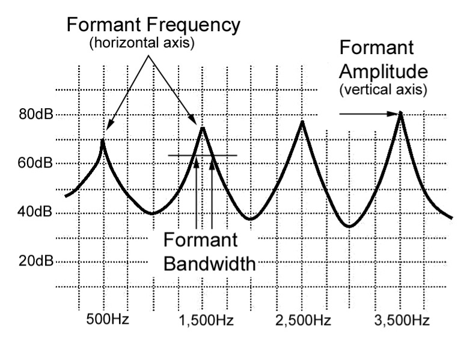
Figure 4-6: Formant bandwidth, frequency, and amplitude
Exercise your brain
Because formants are the same as resonance frequencies, they can be calculated using the same mathematical equation. In Chapter 3, the formula R = C/4L was used to find the first resonant frequency for a closed/open tube. To convert this formula for use with formants, we simply change the variable “R” (resonance) to “F” (formant): F = C/4L. Using a length of 17.5cm (the average length of the adult human vocal tract) and 350m/s as the speed of sound, the first formant is found to be 500Hz.
Formants are resonance frequencies. As such, they are found only in odd-numbered multiples of the first resonance (but only if the resonator has a uniform diameter—more about that a little later in the chapter). A simple mathematical adjustment to the formula accommodates this: Fn = (2n-1)(C/4L). In this equation, the small-case letter “n” is used to indicate the formant number. The expression (2n-1) ensures the result is always an odd number. Now, use this formula to determine the location of the third formant in a 17.5cm tube. The answer appears at the end of the chapter.
Formant frequencies are altered through changes in the shape of the vocal tract, which can be caused by moving the tongue, opening or closing the mouth (jaw movement), rounding or spreading the lips, and raising or lowering the larynx.
Spoken language is possible only because different people are able to produce approximately the same sounds. With subtle variation, one person’s /a/ essentially is the same as another’s. Formants allow this to happen. Without them, the world would be like the biblical Tower of Babel and people would not be able to understand each another. A vowel is really nothing more than a specific timbre or spectral envelope—an acoustic signature, so to speak. Whether produced by the human voice, a synthesizer, or even by a talented bird, this spectrum always will be about the same.
Two formants are required for vowel identification. The following examples illustrate the locations of F1 and F2 for the cardinal vowels, / i – e – a – o – u / (Figure 4-7, 4/1-5).
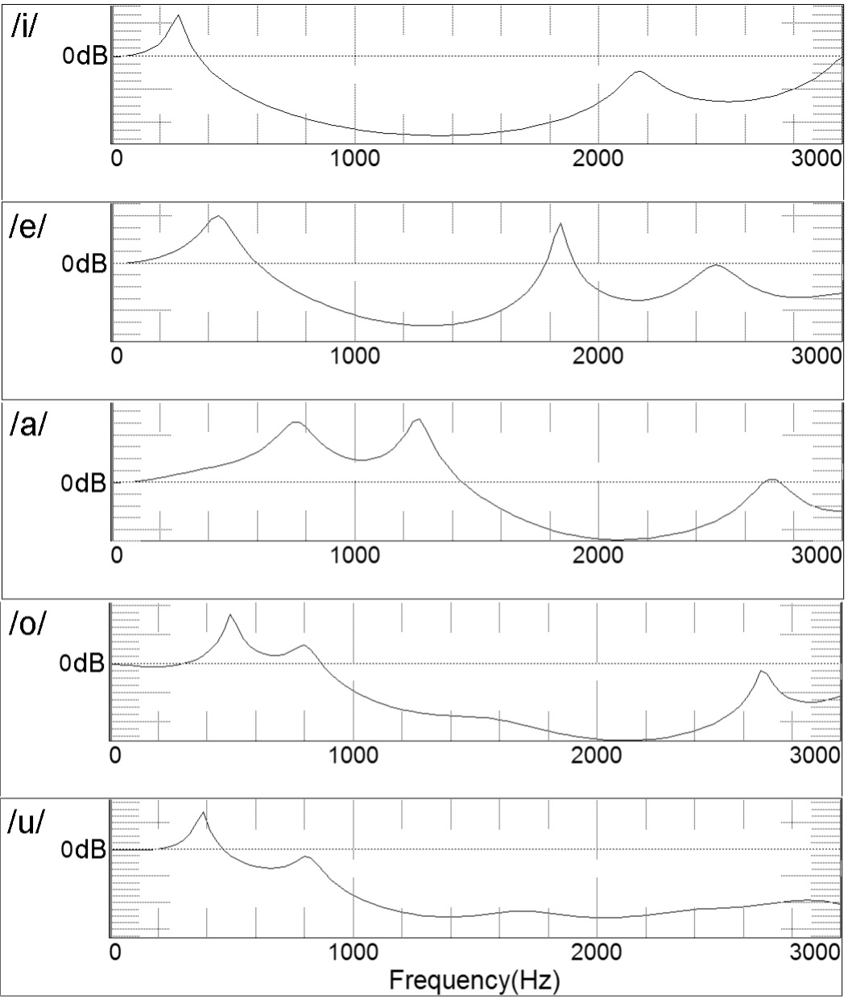
Figure 4-7: Typical formant locations of cardinal vowels
Media 4/1-5: Cardinal vowels, showing formants
In the above examples, the formants are seen to move in a specific pattern. F1 begins relatively low (in frequency) for /i/, rises for /e/ and /a/, and then falls for /o/ and /u/. F2 begins relatively high for /i/ and progressively lowers with each successive vowel, perhaps rising just a little for /u/. Vowel formants remain in these relative positions, regardless of the fundamental frequency. This is shown in 4/6.
Media 4/6: Vowel formants remain relatively steady in spite of changing pitch
The most important factor in the production of vowels and vowel formants is the location of the tongue, followed by the shape of the lips and the opening of the jaw. All of these factors have the ability to change the shape of the vocal tract, which in turn causes predictable alterations of formant frequencies. Most of these changes can be codified through a set of six basic formant rules:
- A constriction in the front of the vocal tract lowers F1 and raises F2
- A constriction in the back of the vocal tract raises F1 and lowers F2
- All formant frequencies lower uniformly when the vocal tract is lengthened
- All formant frequencies rise uniformly when the vocal tract is shortened
- All formant frequencies lower uniformly with lip rounding and increase with lip spreading
- An increased mouth opening (dropping the jaw) raises F1
Experiment
It is easy to hear the relative pitches of the various vowel formants.
For F1, open your mouth a little way and keep the glottis closed (don’t let any air in or out). Now snap a finger against the fleshy part of the underside of your jaw or against your cheek while you silently form the vowels / i – e – a – o – u /. The pitch produced by the snapping of your finger will be heard to rise and fall as the vowels change. You are hearing the amplification provided by the first formant.
For F2, whisper the vowels / i – e – a – o – u /. The pitch of the whisper will continuously fall from /i/ through /u/ in response to the changing second formant.
The Cardinal Vowels
The following examples present the articulatory postures of the vocal tract and the resulting acoustic spectra of the five cardinal vowels, / i – e – a – o – u /. Typical formant frequencies are cited for men and women (Peterson and Barney, 1952). These figures are averages for speech. Sung vowels almost always will be somewhat different.
/i/
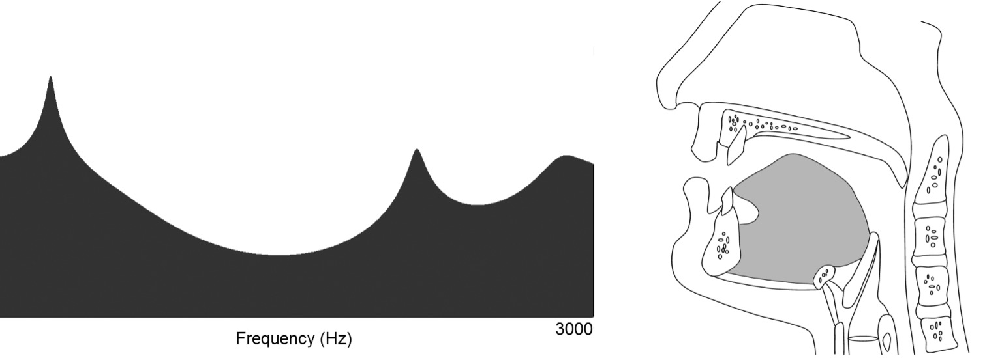
Figure 4-8: Formants and tongue position for /i/
To form the vowel /i/, as in the English word heed, the tongue pulls forward to create an acoustic constriction in the front of the oral cavity and an open space in the oropharynx. It is therefore classified as a front, closed vowel. The palate is lifted and the nasal port closed.
Men: F1 ~270Hz (C4-sharp) F2 ~2,290Hz (C7-sharp)
Women: F1 ~310Hz (D4-sharp) F2 ~2,790Hz (F7)
/e/
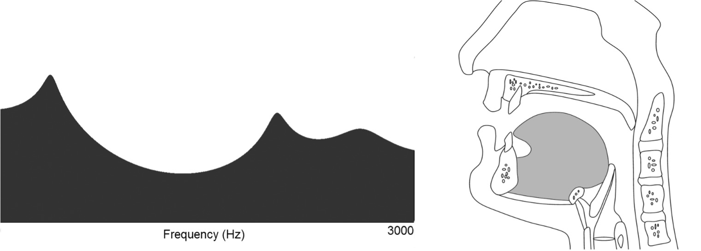
Figure 4-9: Formants and tongue position for /e/
The vowel /e/, as in the English word chaos, requires a slightly lower tongue position than /i/ with a resulting larger space in the front of the oral cavity. It is classified as a front, closed vowel. The palate is lifted and the nasal port closed.
Men: F1 ~530Hz (C5) F2 ~1,840Hz (A6-sharp)
Women: F1 ~610Hz (D5-sharp) F2 ~2,330Hz (D7)
/a/
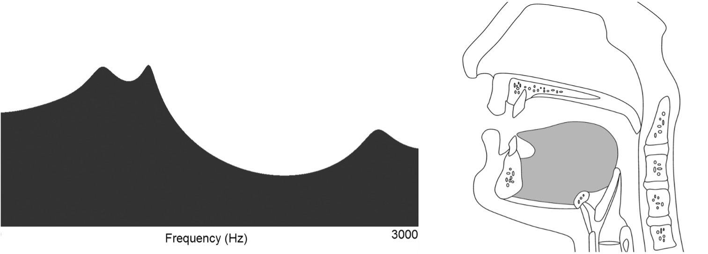
Figure 4-10: Formants and tongue position for /a/
For the vowel /a/, as in the English word father, the tongue pulls backward to form an acoustic constriction in the oropharynx and a relatively large space in the front of the oral cavity. It is therefore classified as a back, open vowel. The palate is raised to prevent air leakage into the nasal cavity.
Men: F1 ~730Hz (F5-sharp) F2 ~1,090Hz (C6)
Women: F1 ~850Hz (G5-sharp) F2 ~1,200Hz (D6)
/o/
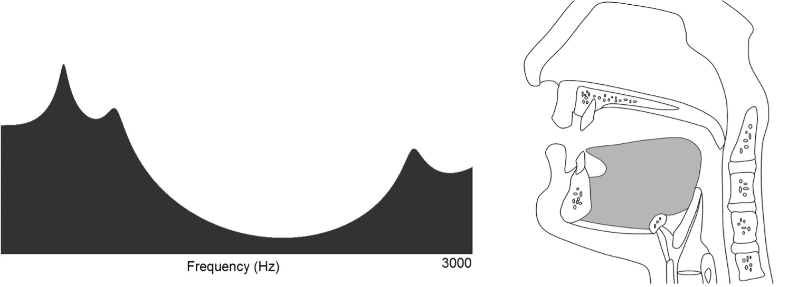
Figure 4-11: Formants and tongue position for /o/
The vowel /o/ as in the English word boat is another back vowel, but with greater posterior constriction than for /a/. Lip rounding is also required. The palate remains lifted and the nasal port closed.
Men: F1 ~570Hz (D5) F2 ~840Hz (G5-sharp)
Women: F1 ~590Hz (D5) F2 ~920Hz (A5-sharp)
/u/
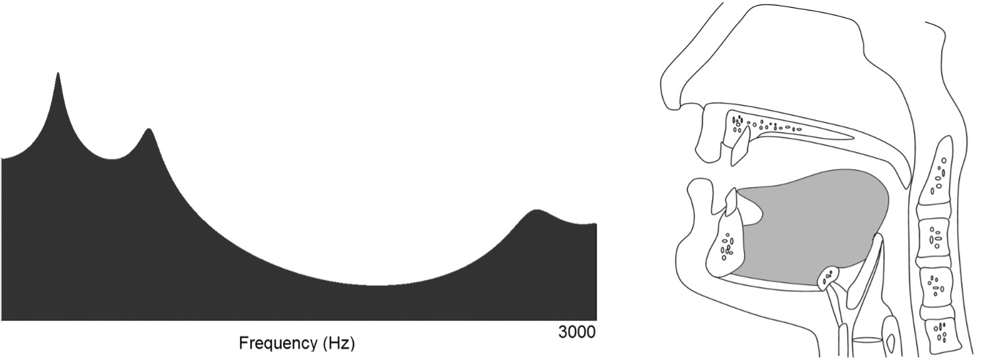
Figure 4-12: Formants and tongue position for /u/
/u/, as in the English word boot, is the most closed of the back vowels. The tongue is retracted, narrowing the oropharynx, and the lips are rounded into a small, cylindrical opening. The palate is lifted and the nasal port closed.
Men: F1 ~300Hz (D4) F2 ~870Hz (A5)
Women: F1 ~370Hz (F4-sharp) F2 ~950Hz (A5-sharp)
Formant Regions
The images and frequencies presented above might lead to the impression that vowel formants must be located precisely at specific frequencies or pitches. In reality, things are a bit more flexible; vowel formants actually are variable over a range of frequencies that extend above and below the average location for any vowel (Figure 4-13).

Figure 4-13: Formant ranges of vowels, by frquency
note the areas of overlap where intelligibility is likely to suffer
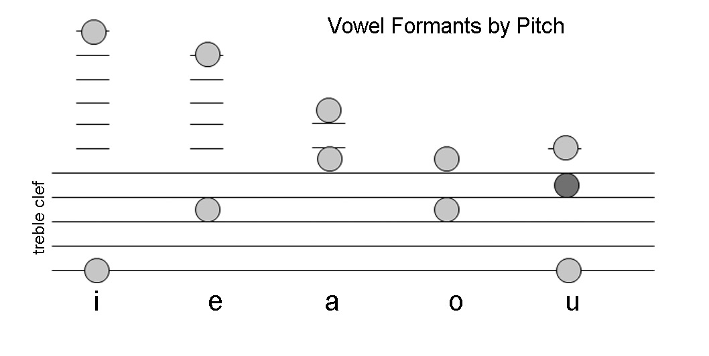Figure 4-14: Typical pitch of first and second formants for cardinal vowels
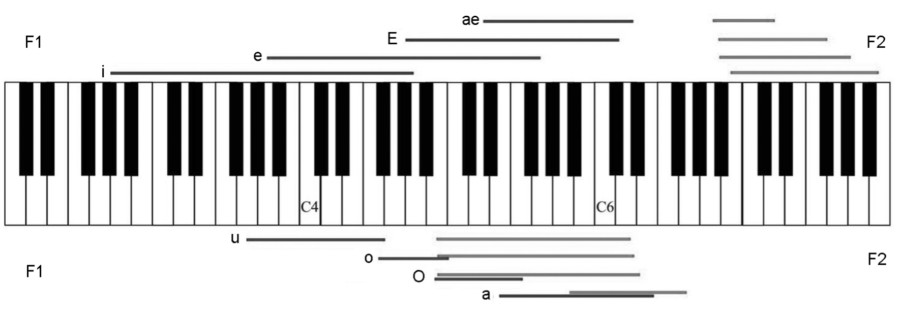Figure 4-15: Possible formant ranges
Let’s look at the vowel /i/. Averaged between adult men and women, the typical first formant is found at about D4. The formant location could be raised or lowered by about a major third before vowel integrity suffers irreparably, making its total possible range from about B3-flat to F4-sharp. The first formant of /e/ averaged between men and women covers the same range of pitches an octave higher. What happens if the formant lies somewhere between F4-sharp and B4-flat, which is the zone between F1 of these two vowels? The resulting sound will lie phonetically between /i/ and /e/. In the context of a poem, you probably could tell the difference between the words heat and hate when sung on G4-sharp; removed from context, it might not be as clear.
You can do a little experiment to demonstrate how vowels morph from one to another as the scale ascends. Sing a scale from C4-C5, steadfastly maintaining the vowel /i/ (men can use falsetto). If you listen carefully, you will hear the vowel gradually shift away from the intended target, transforming into /e/. This will happen regardless of how hard you try to maintain the purity of the vowel. You will also become aware that re and mi in the scale sound and feel particularly resonant—this is where they receive maximum benefit from their proximity to the vowel formant.
Vowel Modification (a.k.a. formant tuning)
Whether they know it or not, all singers modify their vowels to one degree or another. Formant locations constantly are shifted during singing to optimize timbre and sound output. Imagine, for example, a tenor singing the pitch E4 (330Hz) on the word heed. The first formant for the vowel in this word normally is found at about 270Hz (C4-sharp). This, of course, is lower than the fundamental frequency he is attempting to sing. His solution is to drop his jaw very slightly, which—according to formant rules—elevates the first formant. In so doing, he tunes F1 and Fo almost to the same pitch. The result is increased amplitude, improved sound quality and easier sound production.
This type of formant tuning occurs frequently and often subconsciously, and the best composers have been aware—whether consciously or not—of this phenomenon. Puccini, for example, set the climactic C5 of Rodolfo’s aria from La Bohème, “Che gelida manina,” to the unstressed first syllable of the word speranza; the first formant of the vowel /e/ is just above this C5. In this case, it might be equally important that the third harmonic (3Fo) is in close proximity to F2. Verdi did the same thing with the Duke’s aria “La donna è mobile” from Rigoletto. Neither of these composers specifically knew about formants. Both, however, realized that their singers sounded better when there was a good match between pitch and vowel.
Imagine now that a soprano is singing the word heed, but with a fundamental frequency of 600Hz (about D5), which is more than an octave higher than the typical first formant of the vowel /i/. This situation is illustrated in Figure 4-16. As you can see, Fo and F1 are a long way apart—too far, in fact, for the vowel to be produced or identified with accuracy.
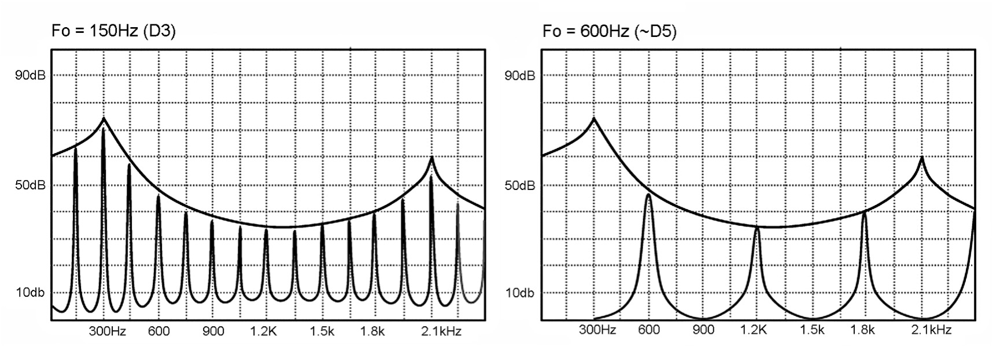
Figure 4-16: Formant structure of /i/. The image on the right shows Fo at 600Hz--no harmonics coincide with the normal formant locations for that vowel
All vowels except /a/ have first formants in frequency ranges that fall below the pitch G5. As a result, all vowels begin to sound alike in the uppermost pitches of treble voices, both female and male. This occurs even when the singer attempts to produce a tone without any vowel modification. Fortunately, consonants and context often help text remain intelligible even at high fundamental frequencies. Out-of-context, however, it is a different matter.
Again, good composers are aware of this problem. Gilda, for example, sings the word sara on her sustained B5 in the aria “Caro nome” from Rigoletto. Many composers skirt the issue entirely by allowing sopranos to wax ecstatically on the poetic syllable “ah!” when singing climactic high notes—something rarely heard in the music of baritones and tenors. Not all composers, however, are equally accommodating. This often is true in music written after the early 20th century when composers began to treat the voice more like a symphonic instrument. Context and consonants can’t cure all diction problems; sometimes the composer has to help.
Let’s invent a scenario to demonstrate the importance of the vowel/pitch relationship. Here are two text fragments that might be found in a soprano aria: “…and I’ll love you forever;” or, “…and I’ll leave you forever.” If the composer truly wants the audience to understand this text, an appropriate tessitura must be employed. The two statements will be easy to differentiate if sung at the pitch B4-flat, but it is virtually impossible to tell one from the other if sung an octave higher—the fundamental frequency and first formant are too far apart. For proof, listen to 4/7.
Media 4/7: Love it or leave it
Vowel modification also is important during vocal transitions through passaggio areas, such as the transition from chest voice to head voice. Register shifts often can be “ironed-out” simply by modifying toward vowels whose first formants are found near the pitches within the area of transition. Figure 4-17 presents the vowel series from closed/forward to open to closed/back. Vowels often can be shifted one or two positions more closed or open without significantly impacting intelligibility, especially when singing higher pitches
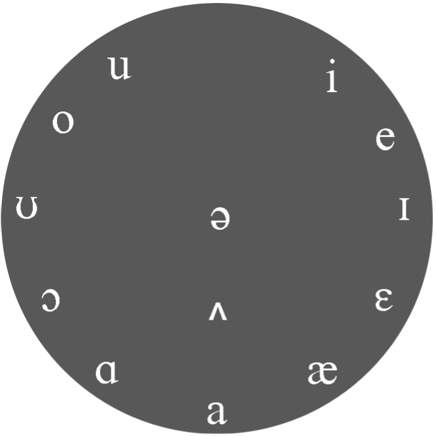
Figure 4-17: Circle of Vowels
Exercise your Brain
If you know the average pitch ranges of formants, you can predict which harmonic will dominate an acoustic spectrum. Try to solve the following puzzle: if a person is singing the pitch D4 on the vowel /e/, which of the first four harmonics is likely to be the strongest?
The answer is simple and predictable: 2Fo.
Let’s look at the logic involved in coming to this answer. The first step is to determine the typical pitch of the first formant of the vowel, which is D5. If you don’t yet know these by heart, use Figure 4-14 to refresh your memory (remember that the possible range extends about a major third above and below the indicated pitch for each formant). The next step is to consider the harmonic series that extends above the pitch being sung, in this case, D4. In sequence, the first four harmonics are D4, D5, A5, and D6. 2Fo and F1 turn out to be exactly the same pitch. We therefore can predict that 2Fo will have significantly higher amplitude than its neighbors. If you have access to a spectrogram program, you will be able to verify this result.
Here’s a more difficult one: if the pitch F3 is sung on the vowel /o/, which harmonic likely will dominate the lower part of the spectrum?
The answer is 3Fo.
Do you see how the answer is derived? The typical first formant of /o/ lies in the vicinity of D5. The third harmonic of F3 is located at C5. 3Fo doesn’t perfectly match F1, but it is close enough to receive a significant boost. A computer program that serves as a formant calculator is included with the Inside View program, which demonstrates the interaction between formants and harmonics for cardinal vowels in male and female voices. Use this tool to help solidify your understanding of formant action.
The Singer’s Formant
Classically trained singers usually produce a timbre that is described as having ring. In this voice quality, harmonics at higher frequencies in the spectral envelope are projected with increased amplitude. The result is a bright, ringing, almost bell-like quality. Most singers and teachers are very familiar with the phenomenon of ring. If this concept is new to you, or if you would just like to hear an excellent example of ring, listen to the excerpt of Placido Domingo singing the aria Recondita armonia (Puccini: Tosca).
The ringing sounds produced by classical singers result from a unique resonance called the singer’s formant, abbreviated Fs, which is created by clustering the third, fourth and fifth vocal tract formants tightly together within a narrow frequency range. This new combined formant—a sort of “super” formant—gives extra amplification to harmonics in the frequency range of approximately 2,400Hz-3,200Hz. The impact of the singer’s formant can be seen in Figure 4-18 and 4/8, which shows the same singer producing tones with and without ring.
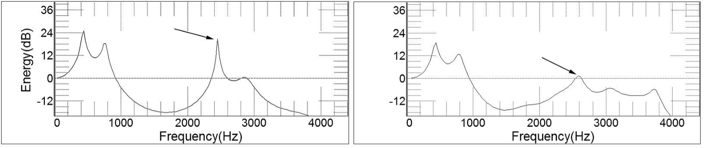
Figure 4-18: Stong (left) and weaker singer's formants
Media 4/8: Stonger and weaker singer's formants
Voice scientists are still not 100% sure how the singer’s formant is created. Most believe, however, that it is the result of resonances in the laryngopharynx—that is, the region from the glottis to the top of the epiglottis (epilarynx). This tube-like anatomical region can function as an independent resonator; its length correlates to a resonant frequency in the range of the typical singer’s formant (Figure 4-19).
Figure 4-19: Epilarynx
The ratio of the size of the oropharynx to the laryngeal outlet is also believed to be important. Voice scientists postulate that this ratio must be in the region of six to one for ring to occur. They also state that this condition only can occur when the larynx is held in a relaxed, low position (Sundberg, 1987); my own experience, however, refutes this finding. I have worked with many students who sing with a high larynx, but still manage to produce a strong singer’s formant (this is especially common in young tenors). Their voices certainly achieve better tonal balance when the larynx finally is allowed to descend to a more natural, released position, but ring was present from the start.
The ringing sound produced by the singer’s formant can only occur if the appropriate sound is fed into the vocal tract by the vibrating vocal folds. Spectral slope (see Chapter 2) becomes an important acoustic phenomenon. As a quick review, spectral slope is the rate at which the amplitude of harmonics decreases as frequency increases, expressed through decibels per octave. Figure 4-20 demonstrates the acoustic spectra of 250Hz source tones at 12dB and 20dB per octave.
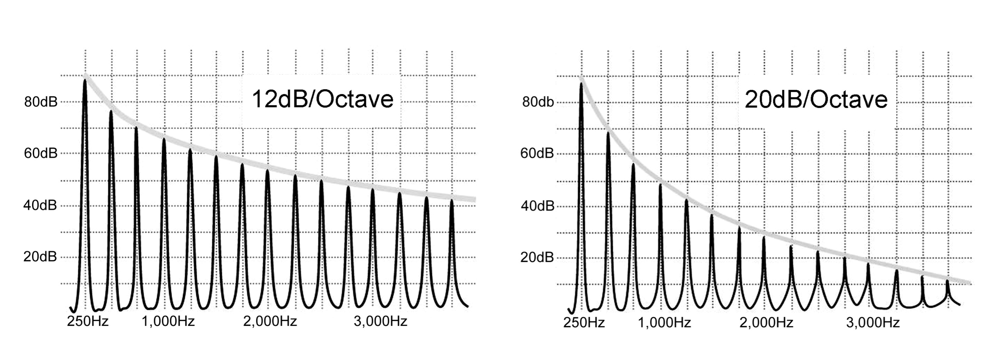
Figure 4-20: Shallow and steep spectral slopes
For the singer’s formant to produce a ringing tone, harmonics must be present in the glottal sound source in the frequency range of 2,400Hz-3,200Hz. If the spectral slope is steep, such as the 20dB example seen in Figure 4-20, the upper harmonics will have too little initial amplitude to be significantly amplified by the singer’s formant. To ensure the presence of high harmonics, the glottis must open and close efficiently and completely. A breathy sound, produced by incomplete glottal closure, almost certainly will be devoid of the strong, high frequency harmonics required for ring. Conversely, in a pressed sound, produced by tightly closing the glottis, high frequency harmonics actually might be too loud, resulting in a harsh, strident sound. Harmonics receive optimum amplitude when glottal closure is quick, crisp and easy, resulting in a clean stoppage of airflow between the vocal folds (Sundberg, 1987).
The role of the singer’s formant in voice projection is readily seen by looking at the typical sound spectrum of a symphony orchestra, as demonstrated in Figure 4-21. Note the peak of acoustic energy around 400Hz and the steep falloff of higher frequencies. Of particular interest is the relative lack of acoustic energy in the 2,400Hz-3,200Hz range. The acoustic spectrum undergoes a remarkable change when a tenor is added to the orchestra, as heard in. Now, a spectral peak is evident in the area of 3,000Hz. By engaging the singer’s formant, the tenor places his voice in a spectral region that has little orchestral competition. The effect is much like stepping from darkness into a spotlight.
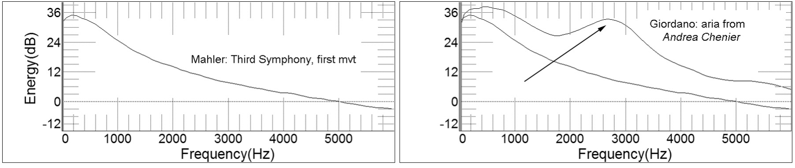
Figure 4-21: Average spectra of large symphony orchestra with and without a singer
A significant percentage of classically trained basses, baritones, tenors, and mezzo-sopranos use the singer’s formant. It is less important for sopranos, especially those who specialize in repertoire that contains climactic high notes. As previously noted, amplitude and resonance potential both increase with rising pitch. Therefore, sopranos usually can be heard over the orchestra without the help of a singer’s formant, especially when singing in a high tessitura. Indeed, if a soprano engages too much boost from Fs in her upper range, the tone is likely to sound harsh, shrill and unpleasant. The reason for this phenomenon is simple: because Fo already is extremely high, few harmonics fall within the 2.4-3.2kHz zone that is reinforced by Fs (at C6, only 3Fo is in this range). By contrast, numerous harmonics fall within the bandwidth of Fs over the entire pitch range sung by tenors, baritones, and basses (Figure 4-22).
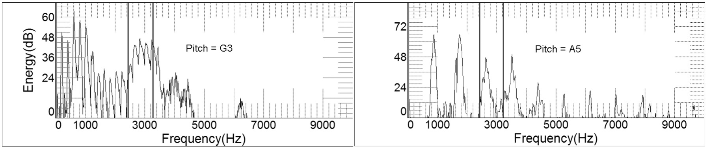
Figure 4-22: Harmonics in the singer's formant zone
Sopranos are not the only opera singers who sometimes abandon the singer’s formant. Donald Miller demonstrated that some operatic tenors actually minimize the impact of Fs for climactic high notes, preferring a strategy that aligns F2 with the third harmonic (Miller, 2008). This practice was exemplified by the great Luciano Pavarotti, especially in his clarion high notes sung with closed vowels. We see evidence of this strategy on the climactic B4 that ends the aria “La donna è mobile.” The spectrum of the final syllable of pensier shows a dramatic peak of energy in the third harmonic; surprisingly, harmonics in the singer’s formant zone are noticeably weaker (Figure 4-23, 4/9). In this example, the third harmonic is located at 1,480Hz (F6-sharp); this is nearly 1,000Hz above the typical orchestral peak (500Hz), ensuring clear, easy projection. The voice still possesses ring, but it is pitched almost an octave below the typical singer’s formant.
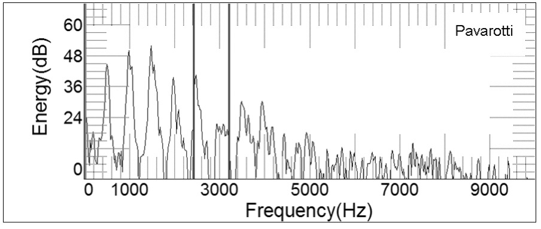
Media 4-9: Pavarotti tuning to 2nd formant "pensier"
Pavarotti is not the only tenor who employs this alternate strategy of formant tuning. Let’s compare two others, both singing the final note from “La donna è mobile:” José Carreras and Alfredo Kraus (Figure 4-24). Carreras employs the same strategy as Pavarotti, using F2 to give strong emphasis to 3Fo. But Kraus takes the more traditional route, using Fs to strongly boost harmonics 5-7; in fact, 3Fo makes only a small contribution to his overall sound. Clearly, there is more than one way to skin this cat!
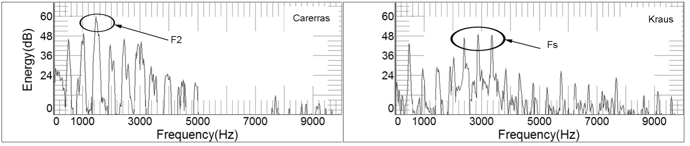
Figure 4-24: Resonance strategies of Carreras and Kraus
Carreras (left) links F2 with 3Fo / Kraus uses Fs to boost harmonics 5-7
The singer’s formant also rarely is used in commercial or popular styles that rely on microphones for sound enhancement. Singers who specialize in musical theater, however, might use a sound that includes some ring. This is especially true for classic shows like South Pacific or works by Gilbert and Sullivan. Stage actors and public speakers also might employ a ringing timbre through a speaker’s formant. One common factor runs through all voice users who employ the ringing quality produced by a singer’s or speaker’s formant: the need to project the voice without significant help from electronic amplification.
Nonlinear Source/Filter Theory
To this point, we have explored vocal resonance through a linear model in which the sound source (glottis) and resonator (vocal tract) are completely independent. This is a one-way system; sound produced by the glottis is filtered by the vocal tract and radiated into the atmosphere. Because the activity proceeds linearly, the sound source has an impact on resonance, but resonance has no return effect on the source.
Singers, however, implicitly have known that this model has limitations. Many experience areas in the musical scale where vowels are not easily produced with uniform timbre; when singing /i-e-a-o-u/ on a single pitch, one vowel might lose clarity or have defective intonation. Often, singers attribute these inconsistencies to breath support—the tone that doesn’t match simply isn’t supported correctly (I’ve never understood why a singer would abandon support for a single vowel). A better explanation for this phenomenon is provided by looking at the voice as a nonlinear resonance system.
As a nonlinear system, voice production becomes a two-way street. The sound source still impacts resonance, but resonance also can influence vocal fold vibration. We know that resonance requires synchronization between the source and filter. When this occurs, standing waves are formed in the vocal tract, which lead to resonance. From a nonlinear perspective, these same acoustic waves contribute to voice production by providing a gentle push that helps close the glottis. When resonance is mistuned, however, standing waves actually might interfere with the vibrating vocal folds, resulting in less efficient glottal closure or false intonation (remember the example of singing a glissando into a long tube—when the source and resonator didn’t match, pitch was distorted).
In the linear model that we’ve previously described, harmonics are seen to increase in intensity as they approach a formant, receiving maximum amplification at the point of arrival. In this system, singers modify vowels to help harmonics match formants as precisely as possible in hopes of optimizing voice production. In the nonlinear model, harmonics also increase in intensity as they ascend in frequency toward a formant. But arrival at the actual peak induces instability and a reduction in amplitude (Titze, 2007). Formants, therefore, might be a factor in voice breaks; their disruption of resonance feeds back to interfere with vibrating vocal folds.
Let’s simplify things a bit: in the linear model, singers tune their vowels to match formants; in the nonlinear model, vowels are tuned to avoid formants. But how do we avoid something we cannot see, hear, or measure? The question might actually be moot. Linear and nonlinear theories of voice resonance both describe amplification and attenuation; they differ in how this occurs, not that it occurs. Either way, singers will continue to modify vowels and make other adjustments to the vocal tract to optimize resonance and increase the beauty of their singing.
_______________________________
Review Questions
_______________________________
-
Formants will be identified in this text using capital F with a subscript number, as in F2 for the second formant. This system eliminates confusion between pitch names and formants: F3 is the pitch located at about 175Hz; F3 is the third formant. ↑